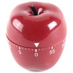

Légendes khmères (2/2)

Vers la fin du mariage khmer, les deux mariés sont assis côte à côte, devant un coussin sur lequel est posée une épée. Le fourreau est du côté de la femme, le manche du côté de l’homme. En effet une autre légende raconte qu’un jeune homme, son apprentissage accompli, s’apprêtait à rentrer chez lui. La route promettait d’être longue. Avant qu’il ne parte son maître lui donne une boîte de bois dur en forme de grosse boule, et lui ordonne de ne l’ouvrir qu’une fois arrivé chez lui, et surtout pas avant, quoi qu’il arrive. Le voilà donc sur la route, marchant depuis des heures sous une chaleur accablante, avec cette mystérieuse boule de bois qui est de plus en plus lourde à porter. Exténué, il décide de faire une halte et s’assied sous un arbre au bord du chemin. Considérant la boule, il n’y tient plus et l’ouvre. Une magnifique jeune fille apparaît alors et il l’épouse sur le champ. Ils reprennent la route ensemble, elle portant l’épée de son mari. Soudain un brigand surgit, et le jeune marié crie à sa femme, qui se trouve entre les deux hommes, de lui tendre l’épée. Mais ce brigand est très beau, et la femme hésite, puis tend effectivement l’épée… le fourreau du côté du mari, et le manche du côté du brigand. Celui se jette en avant, saisit l’arme et tue le mari. Et comme en plus d’être très beau il est très intelligent, il réalise qu’une femme prête à un tel revirement est dangereuse, et la tue également.
Moralité : la fidélité ou la mort, et soyez patients même quand les boules sont lourdes.